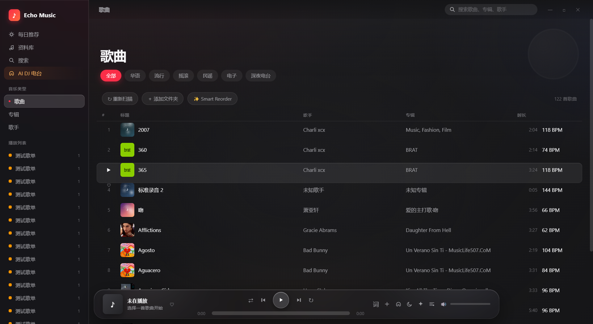
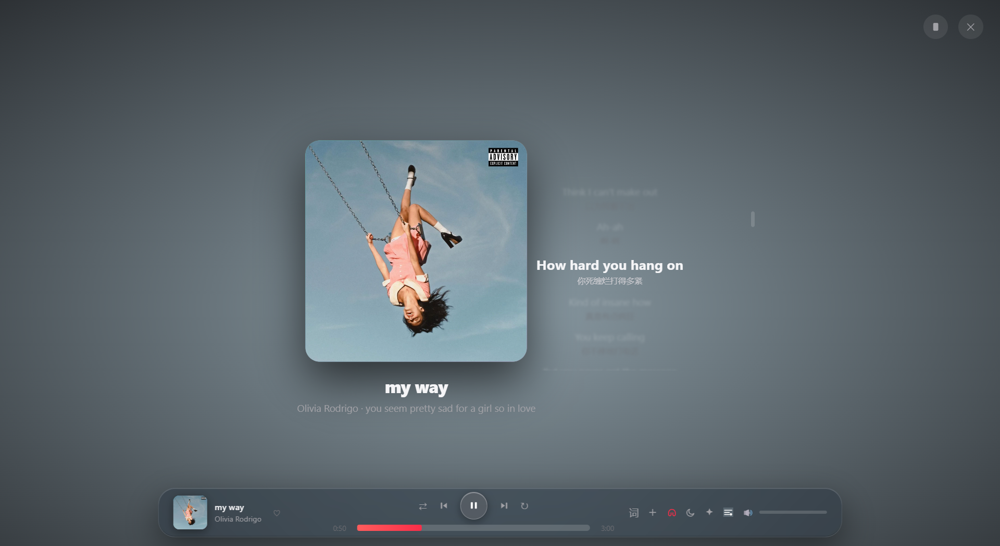
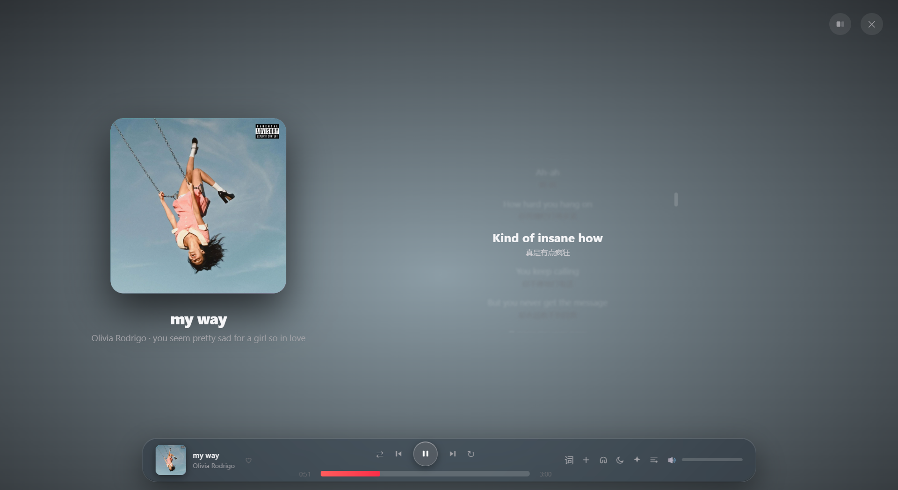
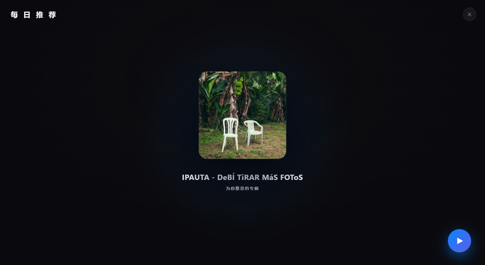

01
本地音乐扫描
自动扫描你电脑里的每一首 MP3，按专辑、歌手、流派整理成你的私人音乐图书馆。不上传、不联网，数据永远属于你。
- 双击即用，无需注册
- 专辑曲目自动按原版顺序归位
- 液态玻璃界面，专辑库一目了然


每一处细节，都为「纯粹听歌」而生。
自动扫描你电脑里的每一首 MP3，按专辑、歌手、流派整理成你的私人音乐图书馆。不上传、不联网，数据永远属于你。

实时同步的歌词逐行滚动，DeepSeek AI 自动翻译成中文对照显示。听懂每一句，不止旋律。

节拍锁定、乐句对齐、调性匹配——AI DJ 在鼓点中让歌曲自然相融，过渡没有停顿、没有突兀，像一场永不落幕的私人现场。

首个 Android APK 已发布，手机上直接安装即可使用（测试版）。
播放胶囊、菜单图标全部改为液态玻璃质感——真折射扭曲、边缘高光、悬浮阴影，不再使用传统毛玻璃。
对话窗口改为全屏大界面，新增 🎤 语音输入，说话即可指挥 AI DJ 调整混音。
主页右侧大圆框现在实时显示当前播放歌曲的封面。
侧边栏与内容区分界柔和过渡；去掉无法识别的流派分类栏（全部/华语/流行/摇滚等）。
FLAC / ALAC / M4A / WAV / OGG / APE 等无损格式识别、标签读取与播放。
无需安装，所有系统浏览器直接打开，支持本地音乐导入与 AI 翻译。
仅支持 Windows · 免费 · 无需注册
Echo Music 正在变得更好。
连接你的全网音乐账号，歌单与收藏随心同步。
更聪明的节拍与调性算法，混音过渡再进化。
任何问题、想法或希望加入的功能，欢迎随时告诉我。